wordpress
intro
wordpress is an open source software which means you can take a version an customize it as you whish
two options
when it comes to making websites on wordpress you have two optoins:
-
first you can make it on wordpress.com which has the wordpress version setup, updated, secure and ready to go. which means you don't have to see what are the security problems and solve them and you don't need to check for updates. Just pick your plan and go
disadvantages
far less customizable compared with the second option which is taking a version of wordpress on your machine and work it yourself as at the end of the day in case of wordpress.com they manage the website not you
-
second option is as mentioned is to download the software from wordpress.org/download
wordpress.org
where you can:
- download the software
- find support
- read documentation
- download and upload themes
- download plugines
documentaion
general tips and tricks
-
according to first-steps-with-wordpress-block-editor docs categories can be sorted in WordPress in two ways: by name (alphabetically) or by ID number. As you enter the categories, they are assigned an ID number. It is difficult to change this, so if you don't want your categories sorted alphabetically, enter them in the order you want to see them presented on the screen.
self notes
homepage slider
in the appearance > customize > home page sections > slider section from the left bar of the dashboard you will notice if you enabled the slider section with your default theme it won't appear that's because it shows on the page you set as the home page from settings > reading > your home page displays > a static page
let's say you chos a page called "courses" to be your home page then it will have the slider on it
but notice if you set your home page to display the latest posts and then go to the courses page it won't have the slider as it's not a home page anymore
also notice when you make a certain page that is in the nav bar the home page both the home and that page are highlighted
and when you click on home while on the "courses" page the page will be the same which makes the website looks broken so my recommendation is to remove that page from the nav bar or choose the home page one that is not on the navbar
bloginfo() vs get_bloginfo()
as far as I understood from the user contributed notes of bloginf docs if you need the value to use in a php variable use the get_bloginfo() as it returns that value while bloginf() just echos the value (like console.log()) and if you set it to a variable the variable will be empty
add tailwind to wordpress
steps according to this video and the installation docs
- go to your theme folder and either open a powershell window or open it with vs code then open the terminal
- install tailwind npm install -D tailwindcss then create tailwind config file npx tailwindcss init
-
inside the "tailwind.config.js" put the paths to the files
that use tailwind it should look something like that
content:
["./*.{php,html,js}","./template-parts/*.{php,html,js}"]
(if you have a template-parts folder of course)
just make sure there is no space after the coma in the content array between the two paths as it will cause a warning of "no utility classes detected"
- create a src folder and then create input.css inside of it (you don't have to create the src folder actually as long as you put the right path to the input.css in the npx tailwindcss -i ./src/input.css -o ./src/output.css --watch command)
-
inside the input.css you put
@tailwind base; @tailwind components; @tailwind utilities; - then make sure your terminal is in the root folder of your theme (not any subfolder in the theme folder) and run npx tailwindcss -i ./src/input.css -o ./src/output.css --watch
-
now we have to include the "output.css" in the style of our
theme so he goes to functinos.php and
adds the highlighted line in the function screenshot below (I
didn't build the functions.php with elzero yet so I'm not
trying this)

the first time I added a tailwind class the output.css version on wordpress didn't update although it was updated on pc so you might have to hold shift on keyboard while refreshing or clear browser cache or just give it a little time
google fonts in wordpress
the problem with adding google fonts is that two styles have rel='preconnect' and one of them even have an attribute crossorigin while the default when enqueueing a style is rel='stylesheet' so I used this piece of code I found on apply_filters() docs from a user contribute notes
add_filter( 'style_loader_tag', 'wpdocs_remove_https_styles', 10, 2 );
function wpdocs_remove_https_styles( $html, $handle ) {
$handles = array( 'twentysixteen-fonts', 'open-sans' );
if ( in_array( $handle, $handles ) ) {
$html = str_replace( 'https:', '', $html );
}
return $html;
}
wordpress problems solved
theme navigation bar doesn't look right
in one theme I was using the links in the navigation bar didn't have space between them they literaly looked lik "homeaboutuscontactus"
the solution was:
- I went to the menus page from the appearance tab in the left bar in the dashboard
- opened the manage locations tab
- and chose the my main nav bar from the primary dropdown menu
elzero 2016
note: i'm taking this course 14/11/2022
05 - Setup WordPress On Localhost
- first you need to download local server like XAMPP
-
after install is finished start both Apache and MySQL
in the setup file of xampp wherever you chose it find htdocs this is the folder where you put the websites you want on the local server and it's the folder opened when you type Localhost in the browser
- download wordpress. not a click bait 😅
- after un-zipping the file copy the wordpress folder (which came from the zipped file) and past it in the htdocs folder
-
go to
localhost/wordpress
after you finish the install that link will lead you to the actual website, if you want to go to the adming panel got to http://localhost/wordpress/wp-admin/
- choose the language
-
-
database name: wordpress
notice that you should create database with the name wordpress on your machine
to create the database (in course elzero said go to localhost/phpMyAdmin but I fuond it outsite of htdocs (the localhost) so I simply copied and pasted it
then go to database tap

type the name you want
choose utf8_general_ci for encription
phpMyAdmin by default makes the user name root and no password (thats' why we put the same info in wordpress setup )
to see the database user's in phpMyAdmin and their permissisons go to privilleges

- username: root
- password: leave it empty
-
database host: 'localhost' (127.0.0.1 is the localhost) so
you can type it as 'localhost' or as numbers as you wish

- prefix: leave it as: wp_ (wordpress uses this prefix before the name of its files in case of another files will be added from different wordpress or different party with the same file name they don't mix up)
- hit submit then 'run the install'
- type the site title you like
- type the username of the website he typed a different name than root so it's probably different username of the database username
- whatever the password you like
- if the password is weak and you like that way check the confirm password checkbox
- type in the email you want to use for recovery cases
- search engine visability: in case you don't want your site to be archived by search engines (no one can get to the website unless they have the link as it won't be visible in the search) then check it. if you want your website to be public just leave it unchecked
-
he explained something about making another database and using the encription in the image below instead of the utf8_general_ci in case he wants to make another wordpress installation bu it didn't really understand wtf he wants

06 - Setup WordPress On DirectAdmin
explained how to install wordpress if you have a domain and hosting, just like local wordpress install but on the server you bought
also explained how to upload the files and manage them using filezilla ftp
didn't find it suitable for me in the mean time so didn't take notes
07 - Setup WordPress on cPanel Website
same as the previous lesson but using "cPanel" instead of "DirectAdmin"
08 - WordPress in Your Language
to change the language simply go to sittings and you will find 'site language' showing you the installed and available languages
choose the language then hit save changes at the page
you can find the installed language files by going to the wordpress folder inside htdocs ===> wp-content ===> languages
notice that at first the folder languages won't exist unless you change the site language one time at lease
also notice that here we're changing the panel and controls language not the site content language (this is not how you make multilangual website)
elzero went on and explained how you can make your own language files for wordpress and how to contribute in the translation projects but I found the info irrelvant so didn't take notes about it
09 - Dig Deep Into WordPress Database
talking about each tabel in the wp database in case you needed to do major changes like changing a certain phrase or link that exists in hundreds of posts or in case you got hacked and don't have the admin username and password. From the database you can enter on admins and change the email and password
- wp_commentmeta & wp_comments: are about the comments the visitors leave on the site posts
- wp_links: contains all the external links (elzero said it was about comptability and should be removed in the future and today is 17/11/2022 and it still here)
- wp_options: contains all the chosen settings like the blog name, the admin's email, etc...
- wp_posts: contains all the articles
- wp_postmeta: I don't fully understand it now
- wp_terms: contains the categories and tags of the posts
- wp_term_relationships: contains the relations between the database tables linking tags with posts and categories
- wp_term_taxonomy: contains the descreption of each catergory
- wp_users: contains all website users (I guess, still not sure if it's about just admins or all users)
- wp_usermeta: contains all info about all users
#10 - Tips to Secure Your WordPress Website
before securing wordpress you have to secure your machine (he won't talk about securing your machine he will talk about wordpress)
quick tips to secure your wordpress site:
-
first way is to secure the dashboard: one way to get to the dashboard is to type in the link of your wordpress site (either locally so you go to localhost/wordpress or hosted so you type the url to the domain you purchased) followed by /wp-admin
you can make a firewall on any folder you have on your website (including the wp-admin) to make a firewall:
- elzero went to direct admin
-
chose password protected directory

- chose find a directory to password protect
- chose wordpress
- chose wp-admin
- in the protected directory prompt you type the message you want it browsed on the firewall (like staff only or whatever)
- type in the user who can access through the fire wall
- type in the password
- check the protection enable checkbox before the save button
- hit save
now when you try to access the dashboard you'll be asked to enter the username and password of the fire wall (to be able after that to enter the username and password to the actual site)

now notice if you type the website link followed by /wp-login.php it will open the dashboard login page just fine without authintication or firewall
to solve the previous problem you can add a rename plugin to your website that will rename the wp-login.php for you so the hacker can't access it
in the video elzero just googled wp-login rename and said that you can find the plugin that suites you best
-
another tip is to always make sure to update the wordpress version (from the dashboard) as they continously patch loopholes
also you can enable auto update but be aware is it may break some stuff down in some customized wordpress versions
just google wp auto update and you will find some codes to add to the wp-config file (he illustrated how to auto update I just don't have energy to type)
- only use the absolute neccessary plugins don't take the easy route and make any small thing using plugin just because you don't want to search how it's done
- don't use cracked or nulled plugins as it will probably contain viruses
-
make sure your password to access the site is hard to crack
you can use a password generator like identity safe from norton
and with such hard randomly generated password you might want to use a passowrd saving application like roboform or you can just count on google password
- you can use a plugin to make a two step verfication or 2fa so when someone tries to access the website it won't let him (with the right username and password) it won't let him untill you verfy the login from your phone
- make sure you're with a good hosting company so the hacker doesn't hack you from the server
- make sure you're using the right file permissions (he illustrated them but I didn't like to type them)
- change the database prefix (wp_) to a hard complicated prefix so when the hacker tries to inject tables in the database and he can't know the right prefix he simply won't be able to inject these tables or they won't be effective
#11 - WordPress Dashboard
site health status panel
Overview of current state of your website and if any parts of it needs improvements.
at glance panel
shows the number of posts, pages, and comments, and you can access them by clicking on them
also at the bottom you find "WordPress 6.4.1 running Twenty Twenty-Four theme."
you can click on the theme name "Twenty Twenty-Four" to change it
change theme (not panel)
- either from the bottom of at glance panel
- or from the appearance tab in the left toolbar
quick draft panel
Allows you to create a new post and save it as a draft. Also displays links to the 5 most recent draft posts you've started.
activity panel
Shows the upcoming scheduled posts, recently published posts, and the most recent comments on your posts and allows you to moderate them.
wordpress events and news panel
shows the latest news of wordpress
#12 - WordPress Toolbar
the "w" icon
when you hover over it, it shows you the following links:
- about wordpress: where you can now the about the latest version and what's new
-
get involved: where you can contribute in developing
wordpress
they have a no-code contribution and a code based contribution
- wordpress.org
- documentation
- learn wordpress
- support
- feedback
the site name
right after the "w" logo you will the see your wordpress website name which takes you to the actual website
comments icon
it takes you to the comments page in which is all the comments on your page and options to control them
new icon
when you hover over it, it gives you the option to add a new:
- post
- media
- page
- user
when you are in the actual website you find a new item in the toolbar the "edit site" which allows you to edit the various aspects of the site like the content, maybe delete something, or change the colors or dimensions of an item
#13 - WordPress Categories
to go to category page: from the left bar > posts >categoreis
you will find the page devided into to sections:
- the left one for adding the category
- the right one for controlling categories
as for the left one you will find:
- name: where you enter the name of the cateogy (the name can be long like learn html from scratch)
- slug: enter a short word or dashed word as it will be used by search engines like (html, or learn-html) just keep it search engine friendly
-
parent categoy: use it in case you're adding a sub-category,
when you click it it will show the available categories
if you're adding a main category just leave it
- descreption: where you add the description for your category
in the right one you will find a table that is devided into: the category name, decription, slug, and the count of articles that belong to that category
when you hover over the category name you'll see four options:
- edit: it takes you to the edit page where you can modify everthing about the category just like you were adding it (the name, the slug, the parent category, the description)
- quick edit: allows you to edit just the name and slug of the category while in the same page without leaving
- if you want delete bunch of categories alltogether you can check the check box at the left of the category name and at the very bottom or the very top of the table you will find a bulk actions drop down where you can find "delete" then hit "apply" right at the right of the dropdown
notice: Deleting a category does not delete the posts in that category. Instead, posts that were only assigned to the deleted category are set to the default category Uncategorized. The default category cannot be deleted.
after that paragraph you find another one telling you that categories can be converted into tags using "category to tag converter" which is a link you can click and it will take you to the import page that is in the tools in the left bar of the dashboard
also notice if you delete a category that was a parent to sub-categories the laters are automatically converted into main categories
#14 - WordPress Posts - Editor & Overview
to make a new post
- either from the plus icon in the top toolbar
- or from the posts tab in the left navbar in dashboard
new post page structure
at the top of the page you'll find a toolbar that has:
- the "w" icon that takes you back to the dashboard
-
plus icon: which opens the blocks,pattern, and media panel on the left wher you can choose what to add in the current place of the article you're at in the moment
you can add paragraph, heading, list, image, and alot more options
- edit (pen) icon: I don't know what it does yet
- undo and redo buttons
-
- list view: document overview which opens a list on the left where you can see all the elements of the article (something like the layer tab in figma or webflow)
- outline: the number of characters, words, time to read, and the heading structure
- on the right of the tool bar you'll find the save button, sometimes wordpress auto saves then you'll see a check icon with "saved" beside it
- a laptop icon which is preview in different screen icon
- publish button
-
settings panel
- post: where you can set the visability, publish time, template, category, tag and other options of the post
- block: where you can change options of the selected block like the text color and background color for paragraph blocks
-
three dots: where you can set the prefernces of the post page like showing the main left navbar of the dashboard or not, showing the top toolbar or not and many other optoins
but one of the most important options is visual editor or code editor which switch between the normal user friendly user interface which is just the words infront of you and the control icons or you can see the actual code


#15 - WordPress Posts - Publish Options
revisions
when you make several modification on a draft wordpress saves every version of the draft just like github

when you click on it it will show you a comparison between the latest version (on the right) and the previous version (on the left) with a plus icon beside the added lines, and a minus icon beside the removed lines
you can go from a versino to another using the slider at the top of the page with every line in the slider representing a version

also you can compare between any two versions by checking the "compare any two versions" checkbox on the right of the slider
you can restore any revision you want

it's a little annoying that wordpress compares versions in the code status not in the visual one so try to search how to make the comparison in the visual editor or status
article status
the default status is draft if you're done and want it to be reviewed by one of your team you can change it's status to pending review by checking the checkbox in the settings panel

then it will be added to the bending tab in the posts page

preview article

visability
- public
- password protected: the user has to enter the passowrd you set to see the article
- private: just like the only-me posts on facebook
- notice that other admins can still see the private posts
publish options
you can either leave it as "immediately" or schedule it

obvously the schedule time is based on your timezone
funny enough I found out that mytime zone was set to utc+0 and my actual one is utc+2

you can either choose your country by the name or you can choose the timezone by the numbers
#16 - WordPress Post Format
according to wp docs some themes support post format features and others don't
from my exploration the post option panel on the right isn't affected by the theme (I guess) and for some reason I can't see the post format dropdown
and when I watched a youtube video from earlier this year he had it
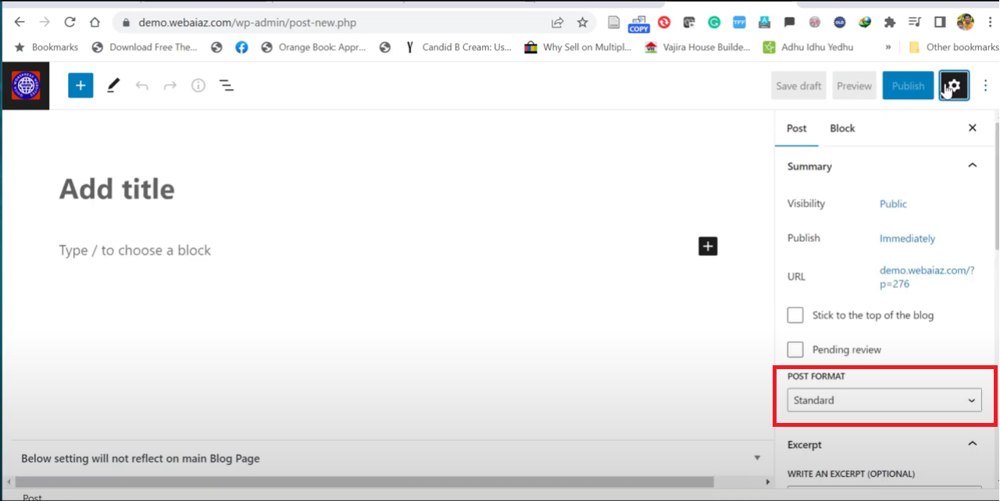the below image is from my pc
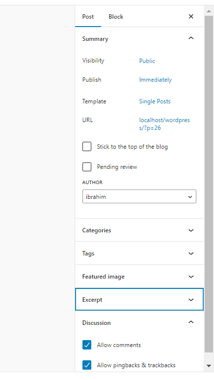also I watched another youtube viedo that guided me on how to change the default post format (settings > writing > Default Post Format) and that one I found so the feature is not removed from wp and I got to figure out a way to find it in the post page
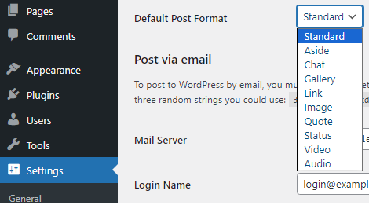#17 - WordPress Categories vs Tags
the best way to understand the difference is with examples
an example of a category is html, css, wordpress, etc...
and an example of a tag is news, tips&tricks, functions
so you can find the "news" tag in all the sections, in another word if you click on "news" it will show you all the news in all categories
sometimes a post can belong to more than one category like "how to build that in html and css" that belongs to both html and css categores and you can specify more than one category in wordpress when you're making the post
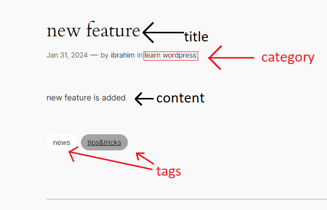note that the cateogries and the tags are clickable
when you go to the tag page (from posts on the left bar) you will see "count" column in the tags table showing you how many times that tag was used
and if you click on the number it will show you a table of all the posts containing that tag
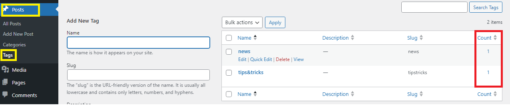#18 - WordPress Screen Options
in the main dashboard you can show/hide the panels you want from the screen options at the top right of the screen
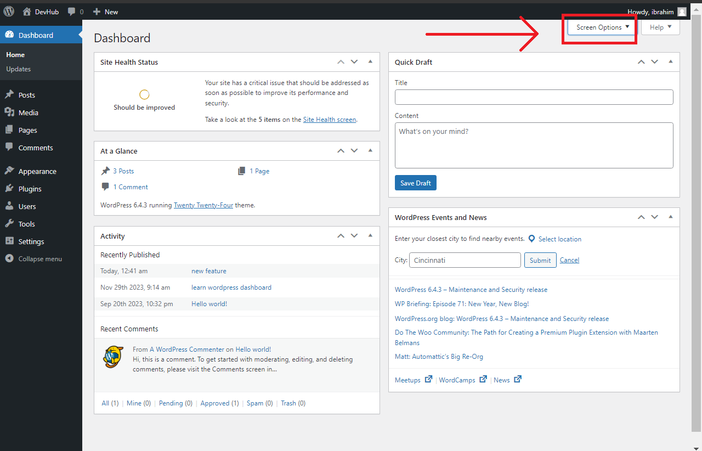note that there are different screen options for every tab in the left bar, which means the options for the dashboard for example is different from the options of the posts and so on
even the options in the adding new post page are different from those in post table page
in the post page there is view mode option
- the compact one just shows you the title of the post
- while the extended view shows you "excerpt" of the post beneath the post title which we will show how to set in a minute but in case it's not set it just shows you the content of the post
so elzero use the screen options in the add post page to add the "excerpt" and to set the "discussion" which both we will explain but apparently in that version I'm working on (or in the theme I'm not sure) there are no screen options so the two options I just mentioned will be found in the settings bar on the right at the very bottom
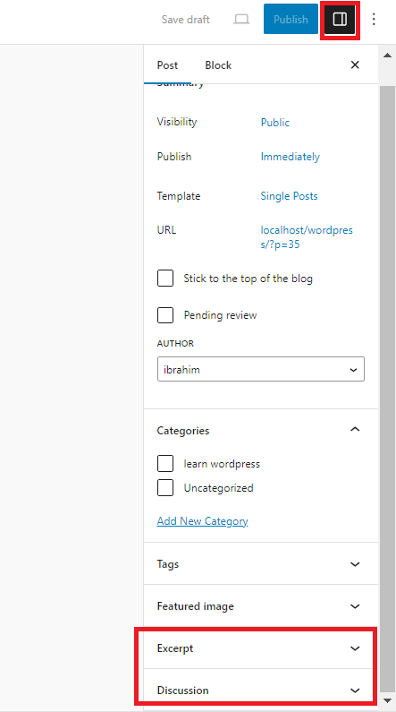as for the excerpt if you open it, it will show you a text area to type the excerpt you want for the post
the discussion panel contains to options
- allow comments
- pingbacks&trackbacks: if checked it sends you a notification whenever another blog puts a link to that post as something like reference, if you allow the "bingback" it shows at the comments of that post as the text of the other post with a link to, of course if you deni it it won't show
elzero also showed option of adding link to another post as a reference but I just can't find that
from what I understood from short searching whenever you put a link to a wordpress post of another blog wordpress automatically sends them notification if they enable the bingbacks on that post
to globally disable bingbacks go to settings > discussion > in the "default post settings" section uncheck "Allow link notifications from other blogs (pingbacks and trackbacks) on new posts" and from the name it disables that option for future posts not the already posted ones
if you go to the post page, selected multiple posts, and from the bluk action drop down chose edit then hit apply it will show you the options you can do to these posts like adding them all to a category (at that case each post will be in his original categories plus that category or categories you chose) or maybe move them all to trash, change their dates, just explore these options

#19 - Featured Image and Permissions
the featured image is the main image of the post
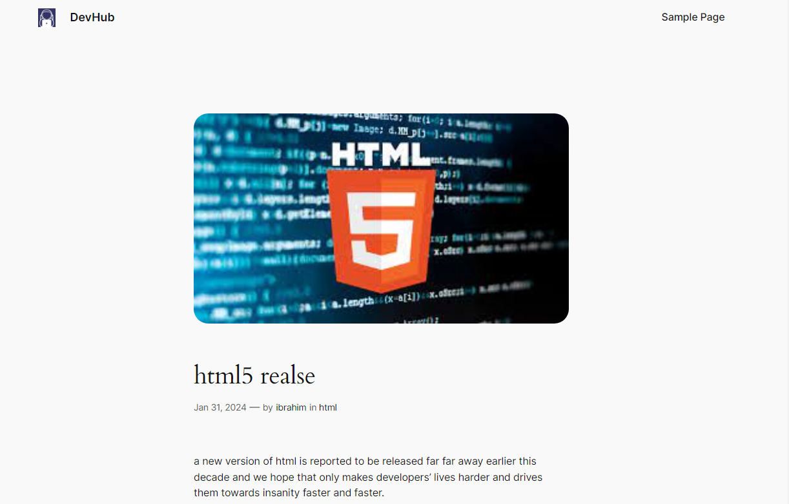now you can have as many images inside of the post but only the featured image is gonna be showed as the image of the post
elzero spoke about a problem that you might encounter which is that wordpress is unable to upload the image
that problem is due to the wordpress not having the premission to write in the wp-content folder (problem from the hosting company)
to solve that problem you go to the ftp program you're using (the program showing you the wordpress folders on the server) > right click on wp-conetent > premissions it will show you the dialouge in the below image
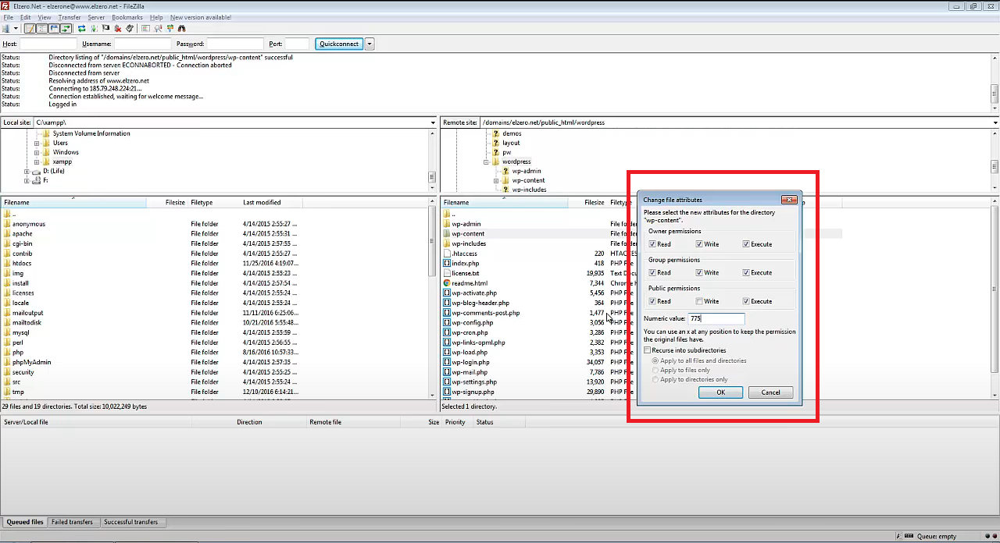these premissions are the right ones
as for the number in the numeric value field (775):
- 775 => public can't right
- 777 => public can right
- 755 => neither public nor group can right
- 555 => no one can right
I didn't search in the difference between the owner, the group, and the public but from what I understood from elzero the owner is simply you, the group is you, wordpress, filezilla and any software you're using, and the public are just the users of the website
also you will find all your website images inside that wp-content in a folder called uploads
#20 - Media and How to Attach Images
in the media page (from the left bar) you can find all the images, videos, etc... you uploaded to the website you can also upload media straight to that page to add them later in your posts
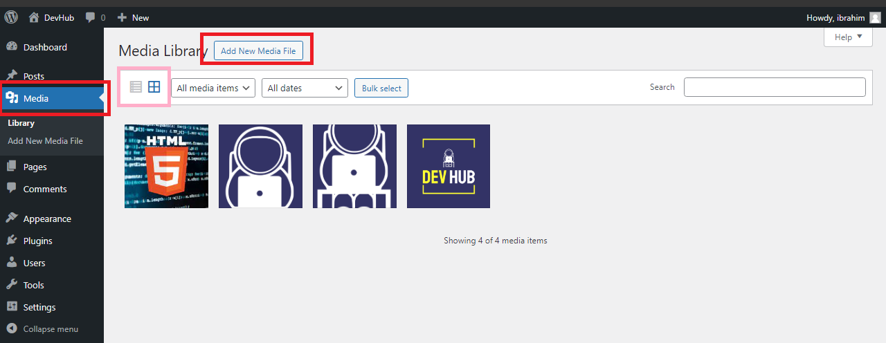-
if you change the view mode (between the 2 icons highilghted
by the pink rectangular) to the list mode you can see details
like where the image is used (if attached) or if its just
unuttached
- you can use the filter (all media items dropdown) to give you better control like you can choose to show only the unattached media and delete all of them (you have to hit the filter button so the filter you chose is applied)
-
you can also distribute your media by
-
attaching the media to a certain post (attach > choose the post/s you want)
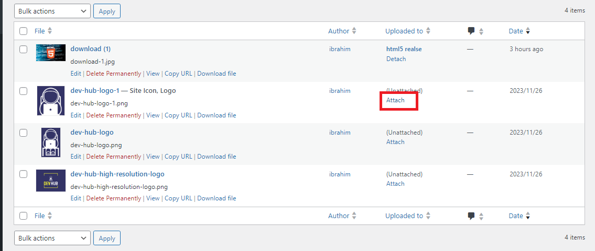 - go to the post you attached it to (the image won't be shown yet)
-
choose to add a gallery (note a gallery not an image)
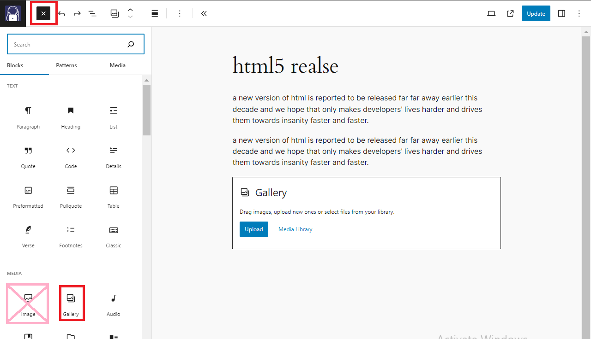 - click on media library
-
from the images dropdown choose uploaded to this post it will show you only the image attached to the post
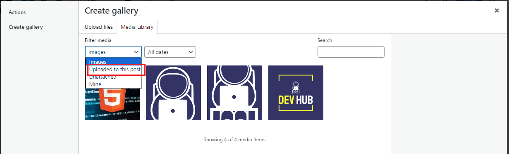
-
also you can just detach certain media and it will deisappear from wherever it is
note that the filter is different in case of square view mode compared with the list view mode
in the square view mode you can click on the image to show you all the details about and you will find two arrows on the top right to slide between them
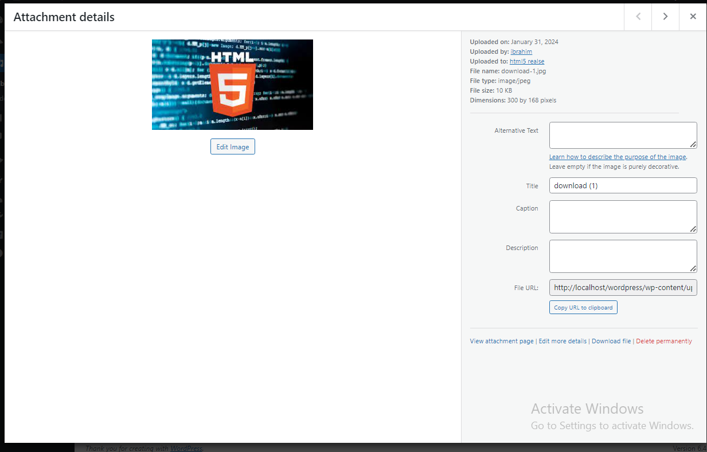#21 - Pages vs Posts
it feels like important info but I didn't feel like it the only take is you can add new pages (home, about us, contact, etc...) from the pages page from the left bar
the page you're adding can be either one of the main pages or a child to an existing page
#22 - Comments System
whenever there's a new comment waiting for addministration approval you will get a notifciation number on the comment tab in the left bar

when you enter you will see the comment table
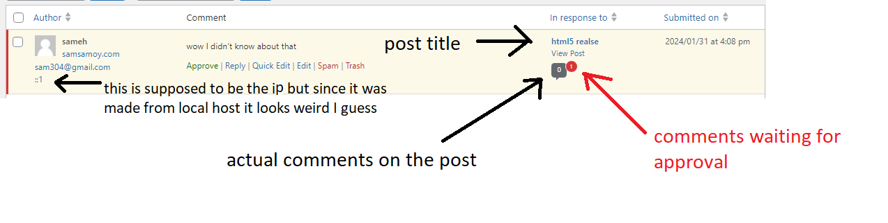right under the content of the comment you will find the main controls for that comment
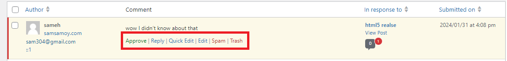- if it's ok you click "approv"
- if you want to reply to it you click "reply"
- the quick edit lets you edit literaly everything in the comment (the name, the email, his website url, the content of the comment) without leaving the page
- the edit lets you make the same edits but in another page
- if that comment is just advertisement or an annoying person you can click "spam" I'm not sure if it prevents that user from commenting again or what
- finally you can delete that comment by clicking 'trash'
note that if you reply to the comment without approving it, it is automatically approved and added with your reply on it
also note that any further replys from that user on that post won't need the administration approval
you can remove any approved comment by clicking the "unapprove" button that is showed in the place of "approve" button previousely
also at the very top of the comment page you will notice the categories of the comments

#23 - Appearance - Themes
he just changed the website theme, he went to
appearance from the left bar >
themes >
add new >
some themes require certain plugins in that case worpress will notify you about it in the dashboard
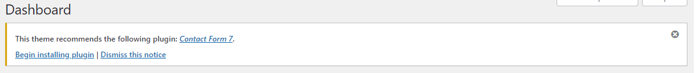#24 - Appearance - Customize
the customize page (which opens when you hover over appearance from the left bar then choose customize ) offers you alot of options to change the visuals of the theme
- change the background color
- add a background image
- change the layout of the page, blog, single post page
- add widgets etc...
notice when you change the layout of the blog or single post page to have a side bar you will see that it's just an empty space that's because you didn't add widgets to it yet
to add widgets to the sidebar go to the widget panel from the customize page choose the sidebar then click the plus icon
at first it will show the text stuff like paragraph, heading, list scroll press the browse all button then scroll until you reach the widget group then you will find widgets like calendar, latest posts, latest comments
as for the social media links widget you will notice when adding a new icon it doesn't show up in the page that's because you didn't set a link to it yet so you click on the icon and add the link and it will show up
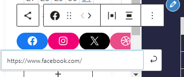just make sure to click on the social media icon itself not the color around it
you can also change the order of the widgets in the side bar by draging the six dots icon above the widget
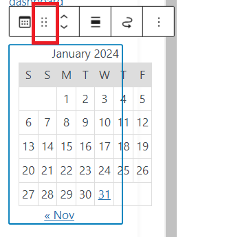-
from the homepage settings you can choose which page of your website you want to be the main one or just make the latest post page the main one
-
from the home page sections you can enable/disable and edit sections like (slider, gallery, upcoming events, etc...)
#25 - Appearance - Widgets
he just showed the different widget pages of different themese emphasizing the info he said about every theme has different widgets of its own
#26 - Appearance - Menu
from the menus page that is under appearance in the left bar of the dashboard you can control all the menus of your website including the nav bar
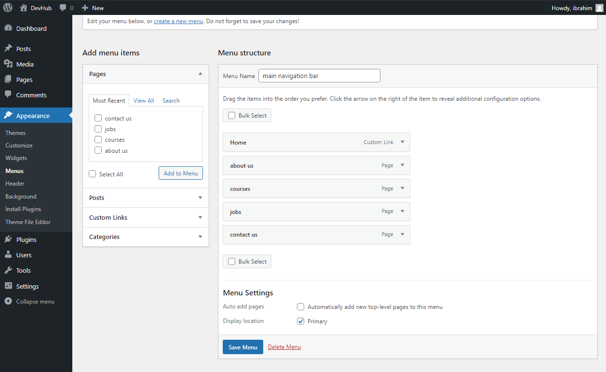on the left you will find the items that you can add to a menu and as you can deduce menus are not just for pages you can also add posts, categories or custom links
the custom link is added by putting the url you want the link to go to and the link text and it will be added just like any other nav bar link
your menu won't show in the website if you don't specify it's display location
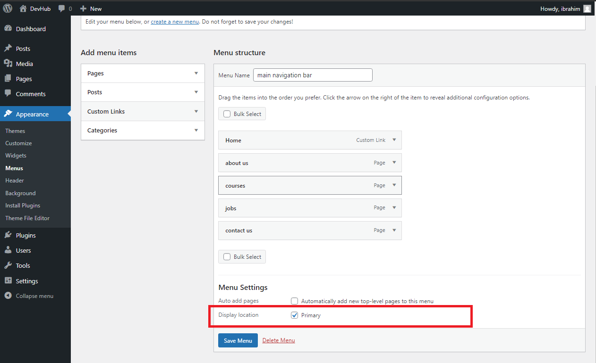some themes offer only one location for menus (like the one in the image) and some others offer more
note that some themes provide a default navigation bar don't think that it is the one you made until you set the location
some default nav bars might seem distorted or out of style (like one theme the links didn't have spaces between them and looked like "homeaboutuscontact") but once you make your own nav bar and assign it's location to primary things will work just fine
all the menu item controls can be found by clicking the little arrow on the right of the item name
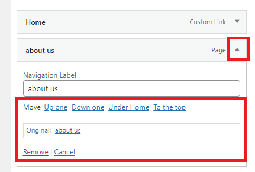note the under home option that's to make the item a sub item of the item above it which is home in this image
to add a new item to the menu you check the items you want and click add to menu button
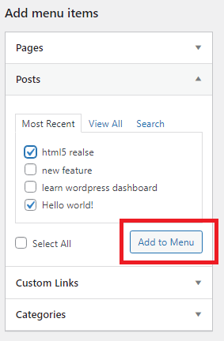and you can order your menu links by simply dragging them
note that in pages there are 3 tabs
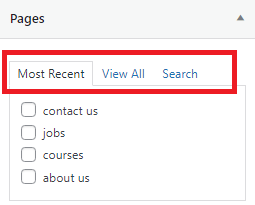also at the bottom of the menu page under the menu settings there's automatically add new top-level pages to this menu option that might make your life easier
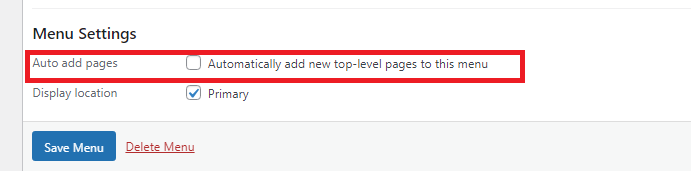#27 - Appearance - Editor
the theme file editor page is where you can edit the code of all your theme files like the style.css etc..
when I opened this page the first time wordpress warned me the directly modifying the theme files is not recommended and I can either:
- make a child theme
- or use the a file manager to make a copy of the main theme so in case things didn't go well you can revert back to that
- or add your css in the additional css page that is in the customize page from the left bar in the dashboard
so when I made a change in the theme file editor page it was added to the code but it was never showed but when I made the same change in the additional css it was showed I don't know the reason
elzero also said that editing the code directly in the theme file editor page is not recommended and he recommended editors you can add your server in and make the changes from like:
- phpstorm
- comdo ide
- Aptana studio
which I made a quick search and found that they were php IDEs and that visual studio code was also on the list
elzero talked about how sometimes you might not find the update file button that's due to wordpress doens't have the premission to write in the file
to find this file to change it's premissions go to wp-content > theme > find the folder with the theme name you want to modify > then the file you want to modify (in my case it was style.css )
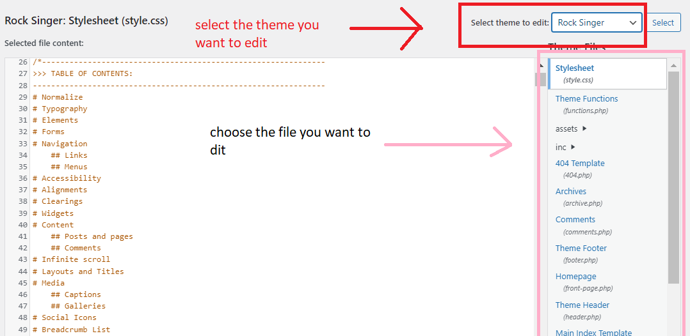#28 - Backup and Live Update
before every update of the wordpress version or the themes you should backup your wordpress website and that's devided into two parts
- the database (which contains the posts, comments, users, etc...)
-
and wordpress files
- the dashboard settings (the appearance, functionalities, etc...)
- the langeuages of the your website, plugins, theme files, media, etc...
- and some other stuff
database backup
-
direct admin
these steps are what elzero did on his hosted website so I don't konw if they're still valied after 7 years or not as I'm working local host (which will give you steps for in a minute)
- in the url of the browser type your website url followed by column ":2222" (example: www.elzero.net:2222) and that should open the cpaenl sign in page for you
- put your username and password
-
under your account section on the right click on mysql mangement
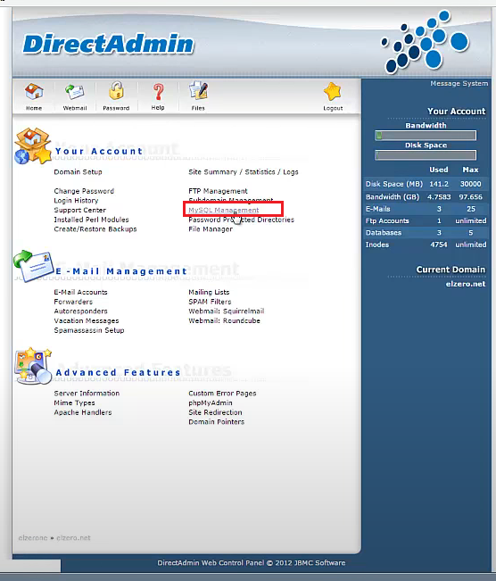 -
find your wordpress database (which in elzero's case was elzerone_mywp) ,click the checkbox on the far right, then click the download button on it's right
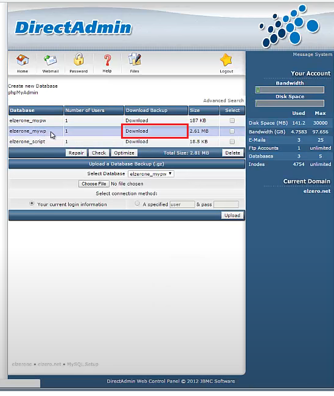
-
phpMyAdmin (localhost)
- in the url type http://localhost/phpMyAdmin
-
on the left hand side find your wordpress database (which in my case was "wordpress") and click on it
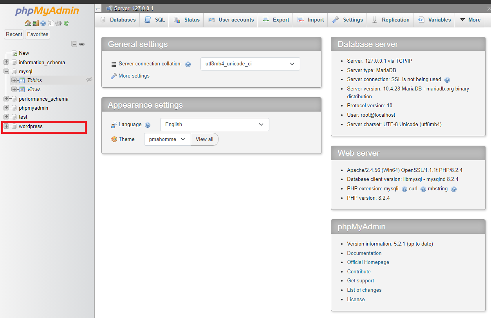 - at the top bar click on export
- the tutorial I found for "how to backup wordpress phpmyadmin" chose the Quick - display only the minimal options and hit export at the bottom left
also check the tutorial video as he explained another 2 ways
- one with a plugin called "updraft" which seems to be the industry standard and he explained how to make the plugin automatically backup your website on daily, weekly bases
- the other one is with the command line which can also be automated and free
- you can also find the database on your pc in that route C:\xampp\mysql\data\wordpress maybe you can just copy those I don't know
file backup
-
filzilla
again that is elzero's proccess on the hosted website
-
on the left hand side (his pc files) he chose the folder he wanted to download the files in
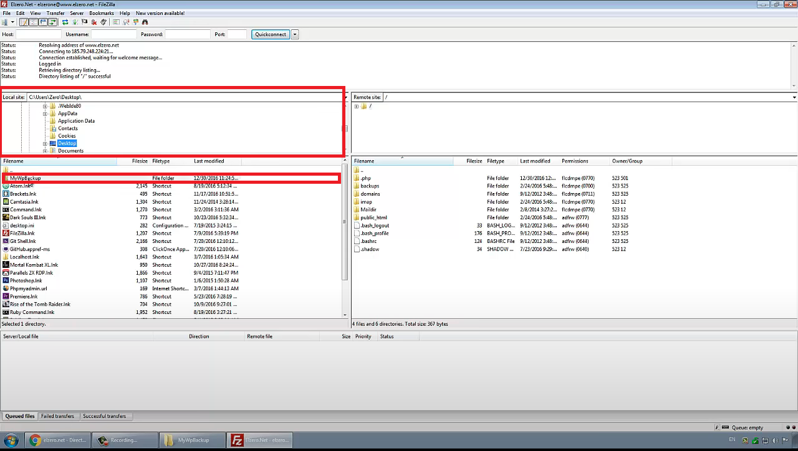 -
from the right hand side (his server files) he chose the wordpress files
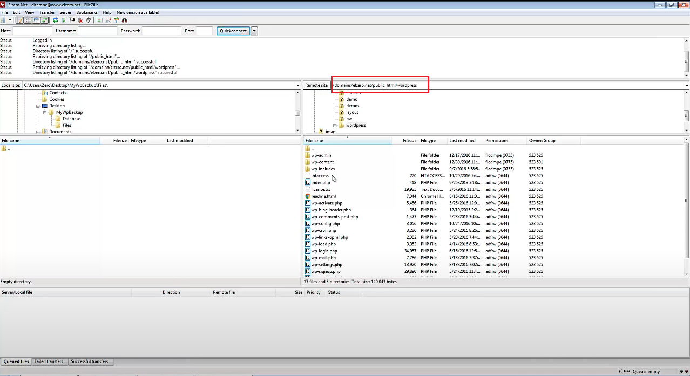 -
select or the wordpress files, right click and choose download
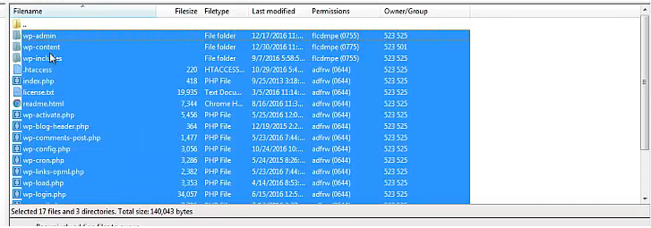
-
-
localhost
well I deduced since the files are already on your pc in case of localhost just go to C:\xampp\htdocs\wordpress and you either copy all the files in there to your backup folder or you just go to the htdocs and copy the wordpress folder itself
elzero mentioned that there is a backup option for the whole website in the control panel but that would backup alot more files than just wordpress database and files so unless you only have the wordpress on your website this option is not recommended
#29 - Plugins and How to Activate Akismet
the plugin page is where you will find your added plugins (activated and not activated) and where you can add new plugin
if you open the plugin page for the first time you will find 2 plugins that come by default with wordpress
- hello dolly: not important just a test plugin that puts qoute for you at the top right of every dashboard page
- akismet: used to catch spam comments and elzero activated it
under the name of the plugin you will find 2 options
- either activate & delete options if the plugin is not activated yet
- or settings & deactivate options if the plugin is activated
activate aksmit
when you click on activate under aksmit it will ask you for your api key and show you a button to sign up in their. Follow the process and chose the personal or free plan
on the donation page that is showed in the image below just drag the slider all the way to the left and the payment form will disappear
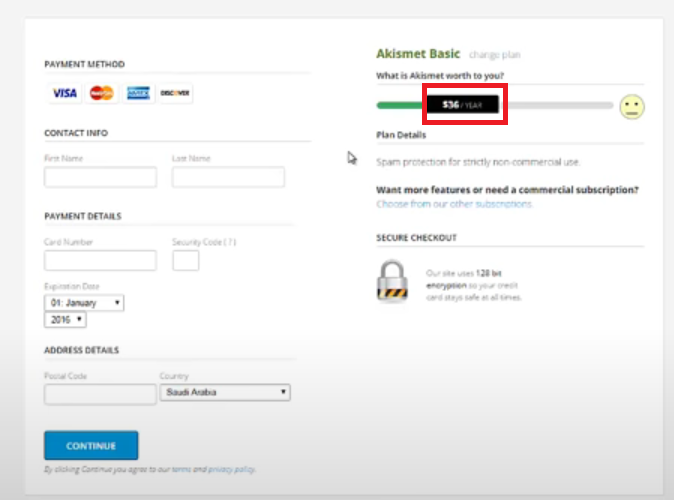get your api key and then go back to wordpress and choose manually enter api key and it will be activated
in case of elzero's since his website is hosted aksmit detected that and asked him for some info of his website so he doesn't have do add the api manually
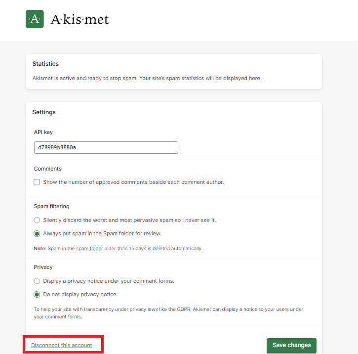it will open you the settings page of the plugin to set the preferences you like and as you can notice at the end of the first section of the page you can disconnect this account
to add a new plugin just click the add new plugin button at the top left of the page
the first thing you will see at the very top of the page an alert to remind you of the plugins your installed theme requires (if there any and you didn't install them)
under that you will find four tabs (featured, popular, recommended, favorites)
and on the left of that you will find a search bar with a search filter on it's left to etiher search with a keyword, author, or tag
under each plugin you will find the star rating of it and at the right hand side of that rating you will find either Compatible with your version of WordPress or not tested on your version yet you have to be attention for that in order not to missing anything up by adding an untested plugin
on the right side of the plugin icon you will find under install show details which will take you to the plugin page on wp to know more about it and see the reviews
also at the very top of the page you will find upload plugin button in case you created a plugin yourself and want to add it
mostly when you install any new plugin it adds pages to the settings tab on the left bar and my add options in the customize, appearance tabs etc...
you can find the plugins' files in wp folder under wp-content > plugins
the third tab in plugins page is plugin file editor which enables you to modify the plugin codes just like we did in the theme file editor
#30 - Users Management
from the users page on the left bar of the dashboard you can manage all the users of your website either if they're (editors, subscribers, conteributers, etc...)
to add a new user click on the add new user button on the top left of the page
the process of adding a new user is straight forward
if you didn't notice you can change the generated password of the new user
if you click on your name in the users page it will take you to the third tab under users in the left bar which is profile where you can:
- choose to enable/disable visual editor
- enable/disable syntax highlight
- change the dashboard color scheme
- enable/disable keyboard shortcuts while managing comments
- show/hide toolbar while viewing the site
- set the language of the dashboard (for you only not for all users)
-
choose your name that will be displayed whenever you make a public action in the website
- like the author name when you write a post
- and in the comments
when I changed my name it was immediately changed in the posts I wrote but it wasn't changed in the comments I typed, however it was changed when I made new comment after I changed the name
elzero said the username (the one you log into the admin dashboard with) is disabled to change as it's important in many other places
at the very bottom of the profile page under account management you will find sessions showing you where and when did you log into the dashboard to help you idintify any unkonwn places and thus know if you're hacked or something
in case of finding unkonw sessions click the log out everywhere else (in case of only the current session you're at exists the button will be disabled)
#31 - Tools Press This, Import and Export
elzero started by talking about press it tool which is a tool you pin to your browser bookmark bar and when clicking on it while you have any article or post (that is not on your website) it takes the image and first paragraph of the post and put them in a post editing for you (a quick way to copy someones post)
but it looks like it has been removed as I can't find it in my versoin
import
the import page is made for migration from other platforms
- you get your posts and media exported from the platform you are at
- then you import that from the import page in wordpress and walla you migrated your website to wordpress
the import page offers you to import from many platforms like (blogger, livejournal, tumbler, etc...)
it also offers to import posts from rss feeds
it also offers import from wordpress in case you want to move content between wp websites
export
this page offers to download your posts, media ,etc.. so you can either import them in another platform or to different wp website
you have two options in export:
- all content: contain your posts, pages, comments, custom fields, categories, and tags, terms, navigation menus, and custom posts.
- or choose certain pieces (posts,pages,media)
when you try to import an export wp will tell you "choose a wxr file to import" wxr stands for wordpress extended rss it's not a special format or anything just xml file like any other export file
backup vs export
the export uses the links of your content not the actual content so if that content is not live on the internet it won't get imported (wheather or not the imported content sticks with you after you delete the original one that's something I don't konw yet)
#32 - WordPress Settings Part 1
general settings
- site title: the name of your website
-
tagline: the small sentence under the site title
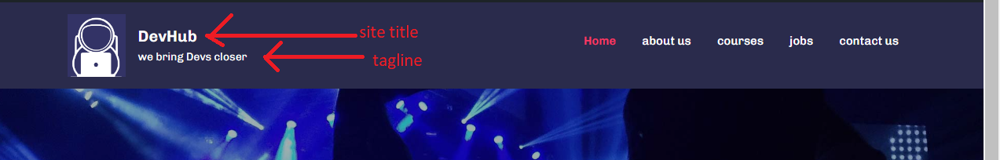 - wordpress url: the path of the wordpress installation on your website
-
wordpress url vs site address
as far as I understood you can change the url of your website (like instead of "elzero.net/wordpress" to "elzro.net") and it will still take you to the wordpress installation, and he mentioned that it is good for security as it wouldn't reveal your wp installation path
- membership: rather or not anyone can register
-
new user default rule:
never make it adminstrator
- site language
- time zone
- preferred date format
- time format: at the bottom you will notice a documentaion link in case you want to make custom time format
- the day to which the week starts
writing settings
- Default Post Category: elzero said it's better to leave it uncategorized
- Default Post Format: again elzero said it's better to leave it standard and let the author choose the format while typing the post
-
post via email: a functionality that allows you to email the post you want to your website and it will be posted
althought elzero showed in some sort of documentation that the built-in post via email is depricated it still shows at my wp version 7 years later so I don't know if it's really depricated or not
the documentation elzero showed also suggested using plugins for that job instead of the built-in
reading settings
- choose what your home page displays (rather its your latest posts or a static page you choose from your pages)
- number of posts at the blog Page
- the number of posts you want to send in your websites RSS
- wheather to show the post's full text or just its excerption
- wheather or not you want your page to be listed (found) in search engines or not
#33 - WordPress Settings Part 2
discussion settings
- Default post settings: (notify any blogs linked to from the post, allow pingbacks and trackbacks on new posts, Allow people to submit comments on new posts)
-
Other comment settings:
- Comment author must fill out name and email
- Users must be registered and logged in to comment
- Automatically close comments on posts older than {set number} of days
- Show comments cookies opt-in checkbox, allowing comment author cookies to be set (I don't know what that is right now)
- Enable threaded (nested) comments {set number} deep
- Break comments into pages with {number} top level comments per page and the {last/first} page displayed by default Comments should be displayed with the {older/newst} comments at the top of each page
-
Email me whenever:
- Anyone posts a comment
- A comment is held for moderation
-
Before a comment appears
- Comment must be manually approved
- Comment author must have a previously approved comment
-
Comment Moderation:
- Hold a comment in the queue if it contains {number} or more links. (A common characteristic of comment spam is a large number of hyperlinks.)
- When a comment contains any of these words in its content, author name, URL, email, IP address, or browser’s user agent string, it will be held in the moderation queue. One word or IP address per line. It will match inside words, so “press” will match “WordPress”.
- Disallowed Comment Keys: When a comment contains any of these words in its content, author name, URL, email, IP address, or browser’s user agent string, it will be put in the Trash. One word or IP address per line. It will match inside words, so “press” will match “WordPress”.
-
Avatars:
- Show Avatars
- Maximum Rating: how propriate or impropriate you allow the avatrs to be
- Default Avatar: choose either just an anonymous avatr or choose among some avatar genterators
media settings
- Thumbnail size
- Medium size
- Large size
- Organize my uploads into month- and year-based folders
Permalink Settings
let's you choose the link format of the posts (wheather it's your base link followed by the post name, or followed by the post date then name or etc...)
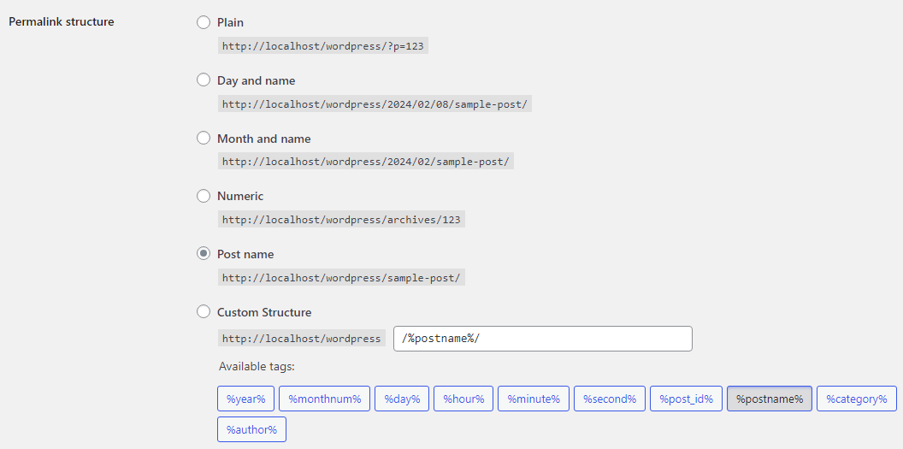you can also make your custom structre at the section that is at the very bottom of that page
privacy
a page where you set your privacy policy (or you can use wp's privacy policy)
#34 - Files and Directories Structure
wordpress version
you can know the wp version by going to wp folder on your pc or your server > wp-includes > version.php
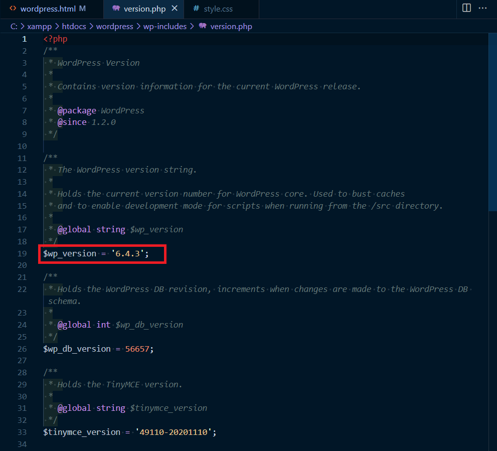why would you need to know wp version
in case of the website got hacked and you want to setup a new clean wp installment you need the version to download it
also the wp-includes contains the widgets folder
the wp-admin is for the dashboard files
wp-content
contains
- languages: the site installed languages
- plugins
- themes
- upgrade: as far as I understood from elzero it contains files that help the wp version update then get deleted
- upgrade-temp-backup: no idea what that is and it wasn't at elzero's
- uploads: contains all your media
why to know the folder structure
according to elzero: in case wp can't add something like a plugin or a theme, etc... due to premissions you can go to the folders on the pc or the server and add them yourself
elzero said as long as you are in the wp-content it's ok to create folders and add stuff
having a blank page when transferring wp website from place to place?
elzero said it may be from the plugins to solve this problem you change the name of one plugin and see if still blank get the name back and change another's name and so on until you find the one causing the problem
finally elzero talked about the .htaccess file and said it was wp configurations for the servers
#035 - Step Into Developing Theme
elzero said you should pay very good attention to wordpress codex
to make a basic theme you have to have some pages (at elzero's they were stuff like style.css, rtl.css, index.php, comments.php, etc...)
but when I opend the codex: theme development they said files like (header.php, footer.php, widgets.php, index.php, etc...)
elzero's codex said that the minimum files to make a theme were style.css and index.php but that doesn't show in my codex plus elzero said it's not really a useful info
he also talked about an image that summaryes the relation between pages and said you shouldn't neccessary understand it right now but once you made all these pages it will come handy

notice that wp has coding standard in writing css , html , javascript , and php as well as accessability standards. Make you sure you give these a look
elzero also explained that these standards are actually an industry standard not just for wp so you better understand them well
#036 - Create Theme Directories and Files
to make a new theme of your own
- go to wordpress > wp-content > themes
- make a new folder with the theme name you like
-
inside that folder create 2 files
- style.css
- index.php
at this point if you go to your themes in your dashboard you will find a blank theme with the name you set for the new folder
note that you will see a message on the top of your new theme "new version available, update now" if you click on update now it will delete all the files inside the folder of the new theme so don't click on it
to include the header inside your new theme:
- open index.php
-
type <?php get_header(); ?> which will load your website logo and tagline
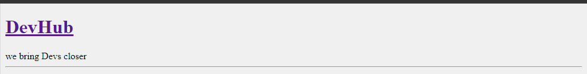
to include the footer type <?php get_footer(); ?>
note that elzero said you MUST always include the footer even if you didn't have footer of your own, as the footer has all the scripts that wp operates with in it and without you'll have alot of problems with your website
then elzero added a side bar widget using <?php get_sidebar(); ?>
and also added searh using <?php get_search_form(); ?>
and said that you will find all the get() functinos you need in codex
in case you encoutner a wp function that you don't konw what it does go to wordpress.org and search for it
elzero also said to pay a good attention to user contributed notes
also said to always type comments in your code it's not wrong for comments to be long and thorough
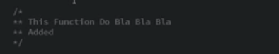#037 - Dig Deep Into Bloginfo Function
to add an image to your theme (usually a screen shot of how the theme looks like) you go to your theme folder and place the image there naming it screenshot
note the image's name must be screenshot otherwise it won't show up
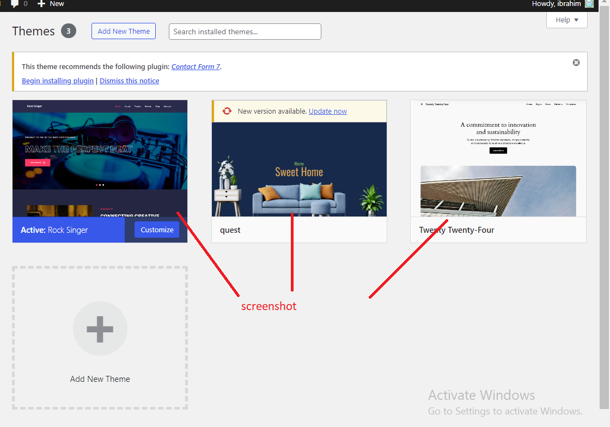elzero talked about a function called bloginfo({string}) where the string can be any of the options I will list below
this function is used to display information about the current website
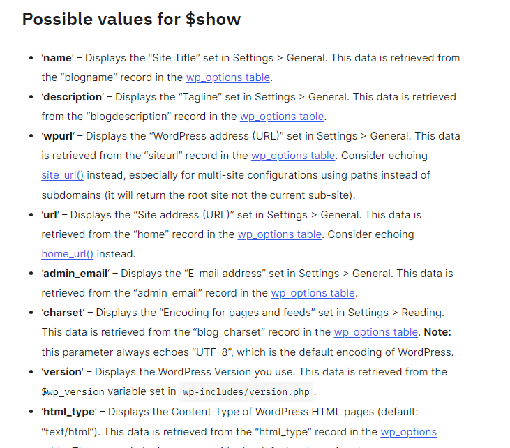there are alot more of options you can find them in the function doc page
#038 - Create the Header Php File
he started coding the html boiler plate in a file he created called header.php in the theme files except he didn't type the closing tag of <html> and said "of course we won't close the html tag" which I don't konw why
the boiler plate is pretty much the same except for some static values he used dynamic values instead
-
instead of <html lang="en"> attribute in the html tag he used <html <?php language_attributes(); ?> >
this function includes the both the language of the website and the direction of that language
-
instead of <meta charset='utf-8' /> he used <meta charset='<?php bloginf('charset')?>' />
- inside the title tags he would've used wp_title() but he said it has some advance in it and at this point if you use it won't echo anything so we will use bloginf('name') for now
-
then he added what I believe allows the pingback for your posts <link rel="pingback" href="<?php bloginf('pingback_url') ?>" />
elzero emphasized that you never add the style or the script of the theme by yourself (like <link rel="stylesheet" href="style.css" />) and that he will show the proper way to add these later
then before the head closing tag you should add <?php wp_head(); ?< as it includes wp scripts and styles (I think are for dashboard)
the first thing you will notice when you show your theme that the website title and tagline are not there anymore and that's because the get_header(); in the index.php calls a default wp header if it doesn't find header.php but once you create your header.php it includes it instead
but notice if you had a missed up header.php the website will be missed up it won't fall back to the dafault wp header
#039 - Create the Functions Php File
he created a css, js, fonts folder and added the css, js, fonts of bootstrap and fontawesome (and any other library you gonna use)
currently I'm not using bootstrap I'm using tailwind and it's not that straight forward to just download it and find your css, js files so follow the steps in taliwind in wordpress
he also created functions.php where all your functions go including these which call the styles and scripts of your theme
#040 - WP Enqueue Style Function
in this lesson he explains how to add your style and script files and they're added on two steps
- making a custom function which uses wp function to add the style/script
- calling this function using what's called a hook or an action
in this lesson he only expalins the first part which is creating a custom function with the wp function in it
the following functions go in functions.php
- creating a custom function is exaxtly like in js function add-my-custom-styles() {....}
-
to include the style file we use a wp function called
wp_enqueue_style($handle, $src, $dependancies or $deps,
$version or $ver, $media)
- $handle: the name of the stylesheet you're including (and according to the docs it must be unique) but it doesn't have to be the same name on the file so you can be including a file with a name bootstrap.min.css but you give it a name of bootstrap-style
-
$src: the source of the
file you're including and it consists of two parts
- the path up to the theme folder and this one you get using get_template_directory_uri()
- the path of the file from that point so it can be somethign like that /css/bootstrap.min.css
- and you type the two by concatination so you should type something like that in $src paramater get_template_directory_uri() . '/css/bootstrap.min.css'
- $deps: An array of registered stylesheet handles this stylesheet depends on.
-
$ver: stylesheet version
number, if it has one, which is added to the URL as a
query string so it is recognized as a new version in case
of caching
If version is set to false, a version number is automatically added equal to current installed WordPress version. If set to null, no version is added.
-
$media: just like css
media it defines The media for which this stylesheet has
been defined.
the default value is all but it can be print, screen, or (max-width: 640px) just like the css
just the handle and src are the required params the others are optional
so the end resault should look like this
function add-styles() {
wp_enqueue_style('main-style', get_template_directory_uri(). '/public/output.css');
}
to add another style you use wp_enqueue_style() again within the custom function
#041 - WP Enqueue Script Function
in this lesson he used the wp function of including scripts wp_enqueue_script() and it takes the same params as the style funciton except instead of $media there's a param called $args which includes 2 options
- strategy which can be either async or defer
- and in_footer which can be true or false in case of true scripts are included just before the closing tag of the body which is in most cases the right palce for them
if you don't have to specify both strategy and in_footer you can just type the value you want like true or async you don't have to put them in an array
so the end result should be something like that
function add-scripts() {
wp_enqueue_script('main-script', get_template_directory_uri(). '/js/script.js', array(), false, true);
}
note that you have to put the default value of the deps and ver to set the value of the in_footer to true
#042 - Add Action and Enqueue Scripts
after creating two functions to include our styles and scripts just like in the js it won't work until it's called so in today's lesson we will call them using what's called hook or an action and it's like the addEventListner in the js
add_action($hook, $function)
$hook is the name of the event you want to call the function with like the 'on-click' in js here we will use wp_enqueue_scripts
notice how this one is scripts with an 's' unlike the handle used to enqueue the scripts which was just script
this hook is used to enqueue both styles and scripts
#043 - WP_Enqueue vs WP_Register
(as much as I understood) it's a function used to load a script: wp_register_script() or a style wp_register_style() to make them available (like a variable) so in case you needed to enqueue them multiple times wordpress doens't have to look for them every time it just gets the loaded (registered version)
just like in js when you create a loop depeneding on the array's length you but the length in a variable so the interpreter doesn't calculate the length every time the code in the loop runs
also registered scripts/styles are recognized just by the name so (since jquery is registered by wp by default) this code will work just fine wp_enqueue_script('jquery') otherwise (in case it wasn't registered) it shouldn't be working (I didn't really test it)
also registered scripts can be used as $deps like wp_enqueue_script('bootstrap-js', get_template_directory_uri(). '/js/bootstrap.js', array('jquery'), false, true) note that you just type the name of the script (just jquery) and it will be loaded
but in case of the code above jquery is loaded in the head which is not the right place for scripts in the next lesson elzero will show how to put it the right place before the body closing tag
of course 'jquery' is the $handle of the script which is unique and you can find a list of the regiestered scripts by default from wp and their $handle at wp_register_script() docs
#044 - Enqueue jQuery From WordPress
to solve the problem of a dependancy being loaded in the head instead of bofore the closing tage of the body you do it on three steps
- deregister: the problem is that it's registered with the $in_footer being false so we deregister it then register it again with the $in_footer being true wp_deregister_script('jquery')
-
register:
wp_register_script('jquery',
includes_url('/js/jquery/jquery.js'), arra(), false,
true)
as for the includes_url() without anything between the () it returns the path to the wp-includes folder in which you will find the regiesterd jquery version hence the the path between the () '/js/jquery/jquery.js'
for some reason elzero typed the last three params as false, '', true which for the first two it's not the right default values
-
enqueue:
wp_enqueue_script('jquery')
notice how we just put 'jquery' as it's recognized becasue it has been registered already
#045 - Add Footer and Main Css Style
he created footer.php and added these lines of code
<?php wp_footer(); ?>
</body>
</html>
note that you have to add the <?php wp_footer(); ?> otherwise all the scripts that are supposed to be before the closing tag of the body won't be added
I added google fonts if you have a problem adding them see google-fonts-in-wordpress
#046 - Add Data To Scripts After
in this lesson we use wp_script_add_data() to add conditional comments like that one for bootstrap
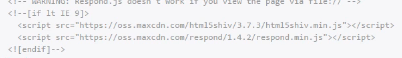simply you add the following in your custom function that enqueues your scripts
wp_enqueue_script( 'wpdemo-html5shiv',get_template_directory_uri().'/js/html5shiv.js');
wp_script_add_data( 'wpdemo-html5shiv', 'conditional', 'lt IE 9' );
in case of multiple scripts you have to write the above code for each one
#047 - Register and Add Menu Feature
in all themes there's a menu page (that you can find in the main side bar in the admin dashboard)
to add this feature to your theme
function register_my_custom_menu() {
register_nav_menu($location, __($description))
}
$location: a string that can be anything you want so let's call it (navbar)
$description: a text description to the menu let's say (main navigation bar that goes in the header)
notice that this is just a function it won't work unless you call, to call it
add_aciton('init', 'register_my_custom_menu')init is a wp action handler which stands for initialize to know all the available action handlers you can chekout action reference
function register_my_custom_menu()
{
register_nav_menu('navbar', __('navigation bar'));
}
add_action('init', 'register_my_custom_menu');
to make sure it worked hover over appearance on the main side bar in the admin dashboard and you will find menus under it (it won't be there if you don't add that code)
notice that there's register_nav_menus() with an 's' for adding more than one custom menu
#048 - Add Bootstrap Navigation Bar
to show the navigation menu you have to do 2 steps
- create a custom funciton that calls wp function for showing the navigation menu
- call the custom function wherever you want in the html
function show_my_navigation() {
wp_nav_menu();
}
since we want that navigation menu in the header we go to header.php, open the body tag and call the custom function
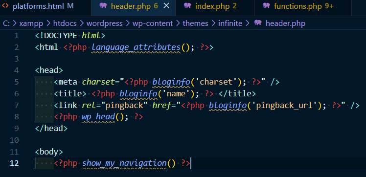now it will show you a list of links of navigation bar which you set earlier from appearnce < customize < menus < main navigation bar
#049 - Add Bootstrap Navigation Bar
when you call the wp_nav_menu() without its arguments it shows the default menu (which I descripted where you can find just above this lesson) which is simpely a list of the pages of your website (of course you can customize it but this is still the default menu)
you can have more than one menu in your website so when you call wp_nav_menu() how do you make it know which menu to show
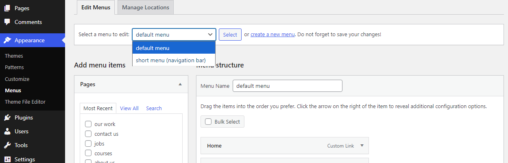let's say we created another menu called 'short menu' to create a new menu you click on the create a new menu which is right below the two tabs of edit menus and manage location
so to show this 'short menu' you have to do 2 steps
-
assign a location to it
remember that this 'navigation bar' location is added by you using wp_register_menu() so it can be called 'my navigation bar' or whatever the $description of the $location has nothing to do with where it goes or any functionality of the menu it's just for the adming of the website
remember that you can make more than one location so let's make another one
function register_my_custom_menus() { register_nav_menu(array( 'navbar' => 'navigation bar' 'footer menu' => 'footer' )); }as you can see the description is what is shown in the dashboard
-
now that we assigned 'short menu' to 'navigation bar' we have to tell the wp_nav_menu() the $location of the 'short menu' to show it
function show_navigation() { wp_nav_menu(array( 'theme_location' => 'navbar' )); }note that theme_location is a wp argument for wp_nav_menu() function you can see all available arguments here
so let's say you called the funciton with the location of 'navbar' but you assigned the 'short menu' to the 'footer' location then the function will show the dafault menu as it found no menu in the location you provided